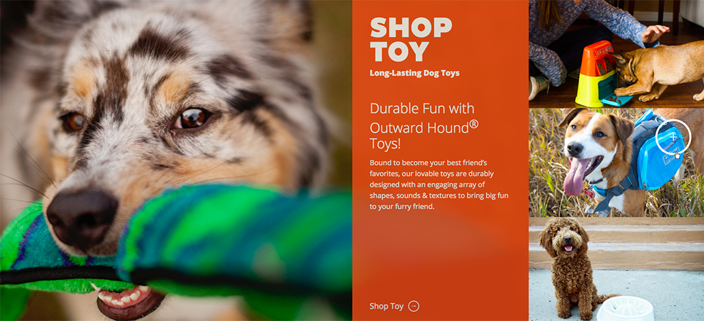
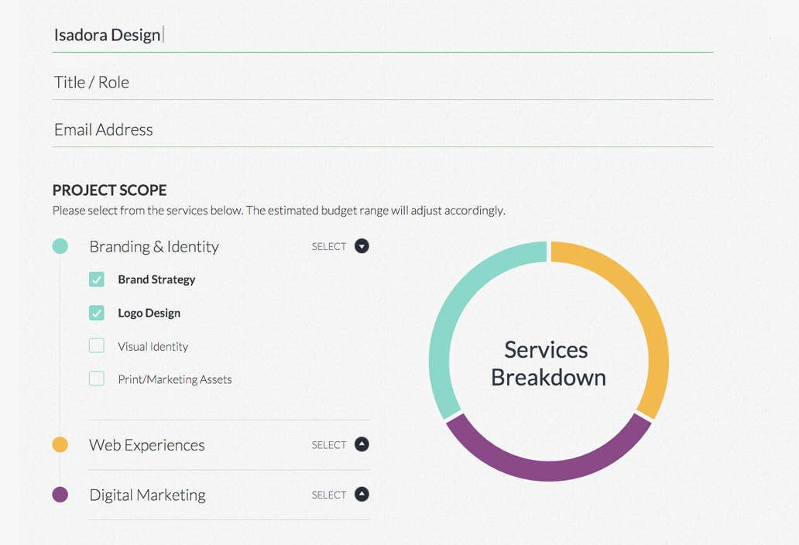

Brands are seizing the opportunity to improve conversion with an interactive business grade website. Are current landing pages doing enough to capture and convert leads online? According to Statistic Brain, the average length of our attention span is just a paltry eight seconds — and it’s steadily decreasing. Developing interactive website pages is a great way to harness the fleeting attention of your visitors and drive them to complete a specific behavior. Interactive websites have the power to draw people in and work to improve critical online metrics. They can make those eight seconds turn a first-time visitor into a first time subscriber, or better yet a long-term partner.
Interactive Website Pages
The function of any website page is to drive visitors to a specific course of action – an objective. Whether you’re asking visitors to sign up for emails, follow you on LinkedIn or purchase a product online, your conversion rates improve when business websites feature interactive landing pages that are relevant, clear and engaging. Relevancy is key. Understanding what brought visitors to your landing page, how much they know about your business and how you can serve them is central to creating an interactive landing page that drives results. Users expect to see meaningful user experiences each time they interact with your brand online.
According to Forrester Research,
Digital touch points can drive revenue, lower costs, build brands and engender customer loyalty. But to achieve these potential benefits, companies must deliver digital interactions that meet customer needs in an easy and enjoyable way
Ideas for Interactivity
The typical structure of a landing page consists of a headline, sub-headline, copy and a call-to-action. With interactive websites, visitors expect much more. Here are a few ideas to take your landing page from basic to indispensable.
1. Use compelling media
Using videos on landing pages can increase conversions by 86%. Include custom videos that are more personable and interesting. Featuring messages from key employees or even your CEO is another great way to showcase brand culture and expertise. High quality photography is another strong suggestion for adding impact to landing pages. It breaks up the monotony of text and add visual interest. Professional grade photography (as opposed to simple stock images) connect better with people. Curating images that are relevant to your goal is extremely important, so don’t add images haphazardly. Think about what visitors need to see in their decision making process.

Other compelling media assets that should be utilized are customer testimonials, case studies, white papers or PDF downloads that serve specific visitor needs.
2. Experiment with Long Form Design
More than 68% of U.S. adults own smartphones and an increasing number of young people are accessing the internet exclusively through mobile devices. The use of smaller computer screens is actually encouraging long form design — longer web pages with more in-depth content. Long form design enables visitors to easily scroll up and down pages without clicking and to find more information with less navigation. Interactive websites also utilize engaging design features such as parallax scrolling to keep visitors on a relevant path through long content. Parallax plays with background & foreground content, where background images or content move slower than foreground images or content. The result is a creative and animated way to tell stories and keep visitors engaged with messaging. Parallax scrolling creates a truly unique user experience, and if done correctly can be quite effective.
3. Enhance conversion paths
Every landing page must have purpose, and a call-to-action such as a feature button like “buy now”, “learn more” or “download here” is a great way to go. But taking a closer look at your conversion paths and strengthening them with interactive features will boost engagement dramatically. Freshen up your landing page with surveys, quizzes, eBooks, or assessments that connect with your visitors and drive interaction. Transform what would normally be static content into meaningful touch points of interaction between brand and potential customers. We have found that a little creativity along conversion paths can go a long way. Whatever your call-to-action, sprinkle in an interactive feature along the way and watch both conversion and brand perception transform.
4. Implement dynamic contact forms
Interactive landing pages can boost your average click rates by 50% and increase conversion rates by 40%. Adding a dynamic contact form extends the interaction visitors have with your business at one of the most crucial stages of the decision making process. A dynamic form combines static input with dynamic values, and will actually auto populate the remaining questions and/or options based on a user’s prior selection. It’s a terrific way to customize the experience to that specific user’s needs. And the more customized and enjoyable the experience, the more we see conversion improve.

Landing pages play an important role within interactive websites. They support the creative features and functionality that incentivize your customers, improve your web search-ability and drive important online interaction. Adding dynamic and interactive elements to your landing pages can make that brief, but crucial, interaction last long-term.